AI Question Pipeline
AI content pipeline that turns educational material into quality-checked practice questions for every school level.
↳ Question generation almost 3x faster
I build AI features and web apps that hold up in production, from first prototype to launch.
01 / Work
Things I've shipped
at work, for clients
and for myself.
AI content pipeline that turns educational material into quality-checked practice questions for every school level.
↳ Question generation almost 3x faster

AI-powered behavioral firewall engine for detecting unknown network threats on Linux gateway hardware.

Mobile-first, game-style web app for children's emotional wellbeing. Kids check in with how they feel, then pick something to do about it: breathe, draw, play or learn.
↳ Built in 3 days
asta-theta.vercel.app (opens in new tab)GitHub (opens in new tab)

K-Means segmentation of retail customers over 500k+ transactions, deployed with Streamlit. Asah capstone.
↳ $22.4M potential revenue uplift
Offline RAG on Llama 3 and Qdrant. Documents stay local.
↳ Retrieval under 1 second
PCA + SVM detection engine for DDoS and port-scan attacks on the CIC-IDS-2017 dataset.
↳ Shorter training time, accuracy kept
3 more on GitHub
02 / Experience
Jobs, internships and programs.
Client work is in Work, above.
Oct 2026 to Present
FULL-TIME
PT ATASK Teknologi Internasional
Remote
I build and run an AI content pipeline that turns educational material into quality-checked practice questions for every school level. I own generation, automated and human review, production operations and reporting to leadership.
↳ Question generation almost 3x faster, with better quality across grades
atask.net (opens in new tab)Dec 2025 to Present
FULL-TIME
PT Sydeco
Sleman, Yogyakarta
I build security platforms: a FastAPI gateway that protects APIs, network security tools built on nftables, an AI behavioral firewall and a multi-layer ML contract risk analyzer.
syde.co (opens in new tab)Jul 2025 to Jan 2026
PROGRAM
Asah led by Dicoding x Accenture
Remote
Earned a competitive national scholarship, shared with 2,000 students, for a 6-month machine learning accelerator. Built industry-grade projects with mentors from Accenture and Dicoding.
github.com/vadhh/Capstone-Project-A25-CS286 (opens in new tab)Dec 2024 to Apr 2025
INTERNSHIP
PT. Teknologi Aplikasi Sejahtera
Pedurungan, Semarang
Integrated REST APIs into responsive web interfaces with the backend team, and turned user requirements into technical specs.
teknosejahtera.co.id (opens in new tab)03 / About
~/whoami
I build AI systems and the software around them. At ATASK I run a pipeline that turns educational material into practice questions. At Sydeco I lead product engineering on security platforms, including an AI behavioral firewall.
I graduated with a B.Eng in Informatics from Universitas Stikubank in October 2026. On the side I build web apps for clients, from a kids' wellbeing app to a retail point-of-sale system.
04 / Contact
I take one freelance project at a time: AI features and
web apps, from first prototype to launch.